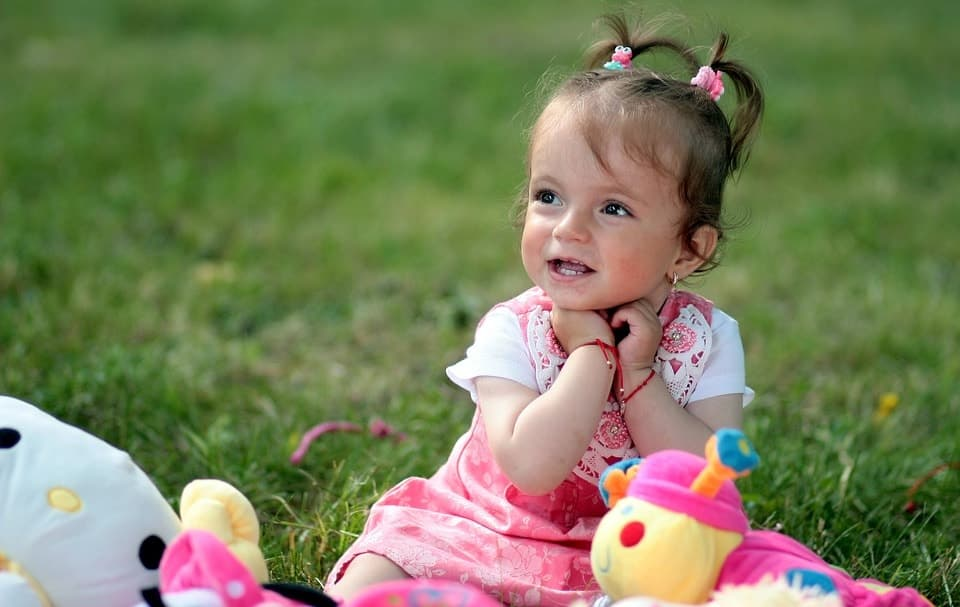
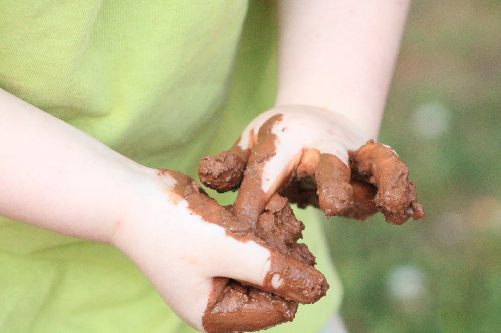
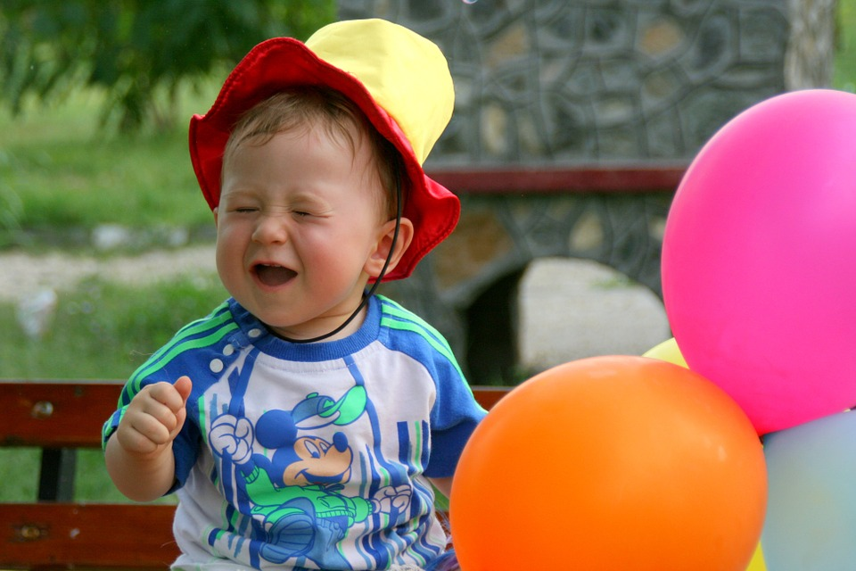

Miejsce na małe i wielkie odkrycia
Tworzymy kameralne środowisko dostosowane do potrzeb dzieci. Dbamy o bezpieczeństwo, funkcjonalność i higienę otoczenia.
Dobry początek wielkiej przygody
Ciepłe, kameralne miejsce, w którym Twój Maluch może być sobą, bawić się i poznawać świat. A Ty — spokojnie wrócić do swoich zajęć.
Dla małych odkrywców od 1. do 3. roku życia

1–3 lataOpieka dla najmłodszych
7:00–16:00Godziny pracy placówki
Olsztyn, Kortowoul. Oczapowskiego 9
Blisko dziecka. Blisko rodzica.
Wiemy, jak wiele znaczy wybór pierwszego miejsca opieki. Dlatego w Uniwerku stawiamy na spokojną atmosferę, uważność i radość bycia razem.
Tworzymy kameralne środowisko dostosowane do potrzeb dzieci. Dbamy o bezpieczeństwo, funkcjonalność i higienę otoczenia.
Materiały i pomoce dydaktyczne zachęcają do aktywności. Inspirują nas Program Zabaw FundaMentalnych i Teoria Inteligencji Wielorakich Howarda Gardnera.
Budujemy relacje oparte na zaufaniu i zrozumieniu. Rozmawiamy o postępach dziecka, jego potrzebach i ewentualnych trudnościach.

Wielki świat zaczyna się od zabawy.Poznajmy się
Uniwerek powstał dzięki współpracy Stowarzyszenia Oświata – Wychowanie – Aktywizacja „SOWA” i Uniwersytetu Warmińsko-Mazurskiego w Olsztynie.
Wspieramy rodziców w łączeniu pracy i nauki z rodzicielstwem. Naszą ofertę kierujemy szczególnie do studentów, doktorantów i pracowników akademickich.
Z radością pragniemy zaprosić Państwa do Placówki opieki nad dziećmi w wieku do lat 3 „Uniwerek” dla dzieci od 1. roku życia (jeżeli rozwój psychomotoryczny dziecka na to pozwala) do ukończenia roku szkolnego, w którym dziecko ukończy 3. rok życia lub w przypadku, gdy niemożliwe lub utrudnione jest objęcie dziecka wychowaniem przedszkolnym – 4. roku życia.
Placówka powstała dzięki porozumieniu dwóch podmiotów: Stowarzyszenia Oświata – Wychowanie – Aktywizacja „SOWA” i Uniwersytetu Warmińsko-Mazurskiego w Olsztynie. Naszym wspólnym celem stało się stworzenie przyjaznego, kameralnego miejsca o wysokim standardzie, spełniającego potrzeby i oczekiwania Maluchów oraz Was Rodziców.
Pragniemy wspierać studentów, doktorantów oraz pracowników akademickich w profesjonalnej opiece i mądrym wychowaniu ich Pociech.
Wiemy, jak trudno łączyć naukę i pracę z rodzicielstwem, dlatego to szczególnie do Was kierujemy naszą ofertę.
Pracą placówki kierują dwie ambitne mamy, które same doświadczają wyzwania, jakim jest łączenie rodzicielstwa z pracą naukową: dr nauk społecznych Anna Godlewska-Zaorska oraz dr nauk społecznych Bernadetta Olender-Jermacz.
Jako osoby od lat związane z Uniwersytetem Warmińsko-Mazurskim w Olsztynie korzystając z zasobów Uczelni stworzyłyśmy na jej terenie miejsce opieki dla najmłodszych – „Uniwerek”.
Kadrę placówki stanowi zespół wysoce wykwalifikowanych, kreatywnych i cierpliwych opiekunek. Ciepła atmosfera, indywidualne podejście do dziecka sprawiają, że Maluchy czują się u nas dobrze.
„Uniwerek” tworzą ludzie z pasją, o wielkich sercach, dla których praca z najmłodszymi to powołanie.
Codziennie coś ciekawego
Ruch, muzyka, kolory i opowieści. Wspieramy rozwój fizyczny, intelektualny, emocjonalny i społeczny — w naturalnym rytmie dziecka.
Brudzimy rączki, tworzymy i odkrywamy.
Słuchamy, poruszamy się i łapiemy rytm.
Bawimy się dźwiękami i ćwiczymy mowę.

Poznajemy historie i rozbudzamy wyobraźnię.
Dopełnieniem codziennej opieki jest wyżywienie zgodne z normami fizjologicznymi.
Nasz codzienny rytm
Znajomy rytm dnia daje poczucie bezpieczeństwa. Przeplatamy ruch z odpoczynkiem, wspólne zajęcia ze swobodną zabawą. Gdy pogoda sprzyja, korzystamy ze świeżego powietrza.
Podążamy za potrzebami Maluchów — plan pomaga nam porządkować dzień, pozostawiając miejsce na ich naturalny rytm.
Porozmawiajmy o Twoim dzieckuPowitania, wspólna zabawa i ruch przy muzyce.
Śniadanie, codzienne nawyki, zabawy edukacyjne i obiad.
Relaks, drzemka i posiłek po przebudzeniu.
Swobodna zabawa i spokojne pożegnania.
Zdajemy sobie sprawę, że dziecko jest cudem, jedynym, wyjątkowym i niezastąpionym. Wskazując na jego otwartość, ciekawość świata, radość eksperymentowania i potrzebę komunikowania się z otoczeniem uwzględniliśmy zajęcia, które obejmują rozwój fizyczny, intelektualny, emocjonalny i społeczny oraz wiele innych obszarów.
Zajęcia prowadzone są w sposób naturalny, zgodnie z możliwościami i potrzebami dzieci. Program zawiera bazę zabaw i gier, które dostarczają dziecku radość, ale mają również swój cel – uczą. Proponowane metody i techniki pracy zapewniają aktywny udział dzieci w nauce. Wykorzystują zabawę, ruch i dużą wrażliwość dziecka na bodźce. Przecież Maluch poznaje najbliższe otoczenie wszystkimi zmysłami! Zakładamy użycie rysunków, kart z obrazkami, plansz, plakatów. Pragniemy nauczyć dzieci słuchania i obserwacji poprzez czytanie ciekawych książek, słuchanie muzyki, słuchowisk i doświadczanie przygód. Stawiamy na swobodną, nieskrępowaną, twórczą, typową dla wieku dziecięcego zabawę.
Uważamy, że stałe czynności w rozkładzie dnia dają zarówno dziecku jak i opiekunowi poczucie bezpieczeństwa, pod warunkiem, że wypływają z naturalnego rytmu dnia, a nie sztucznych regulacji. Dlatego też dostosowujemy się do potrzeb Malucha. Uwzględniamy również potrzebę ruchu na świeżym powietrzu i kiedy to możliwe korzystamy ze sprzyjających warunków atmosferycznych. Rytm życia w placówce uwzględnia konieczność przeplatania zajęć: zajęcia o mniejszej i większej intensywności ruchu, swobodne i zaplanowane, w pomieszczeniach i na powietrzu.
Pierwszy krok? Porozmawiajmy.
Chcesz dowiedzieć się więcej o opiece w Uniwerku?
Zadzwoń lub napisz. Chętnie odpowiemy na Twoje pytania.
7:00–16:00
53°45′21.5″N 20°27′35.6″E
Mapa Google ładuje się po kliknięciu.